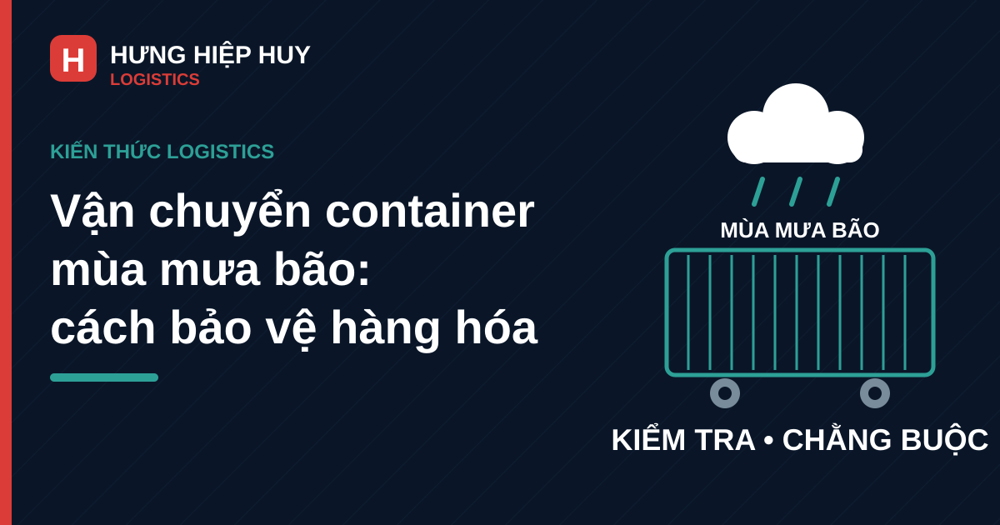

Vận chuyển container mùa mưa bão: cách bảo vệ hàng hóa

Mỗi năm, vào mùa mưa bão, miền Trung lại bước vào giai đoạn thời tiết khó lường nhất: mưa lớn kéo dài, đường ngập cục bộ, gió mạnh và lịch làm việc của cảng, kho, nhà máy đều có thể thay đổi đột ngột. Với doanh nghiệp gửi hàng bằng container, đây là thời điểm rủi ro hư hỏng và chậm trễ tăng lên rõ rệt.
Bài viết này chia sẻ cách kiểm tra container, đóng gói, chằng buộc và chọn lịch chạy trong mùa mưa bão, giúp chủ hàng giảm nguy cơ hàng bị ẩm, ướt hay xô lệch trên đường. Các lưu ý áp dụng cho vận chuyển container nội địa bằng đường bộ, đặc biệt trên các tuyến đi và đến miền Trung.
Vì sao mùa mưa bão rủi ro hơn với hàng đóng container?
Nhiều chủ hàng cho rằng container là thùng thép kín nên hàng bên trong luôn an toàn trước mưa. Thực tế, container chỉ bảo vệ tốt khi vỏ còn tốt, ron cửa còn kín, sàn còn khô và hàng được đóng gói, chằng buộc đúng cách.
Nước mưa có thể thấm qua ron cửa và các mối ghép
Ron cửa cao su sau thời gian dài sử dụng có thể chai cứng, nứt hoặc cong vênh. Bình thường, một khe hở nhỏ có thể chưa gây hậu quả. Nhưng khi xe chạy nhiều giờ dưới mưa lớn, hoặc container chờ ngoài bãi trong mưa, nước có thể thấm dần qua khe ron, các mối ghép ở góc thùng và những vết móp, rỉ sét trên vỏ. Hàng đặt sát cửa, sát vách hoặc trực tiếp trên sàn dễ bị ướt đầu tiên.
Đường ngập, đường trơn và gió mạnh làm chậm lịch chạy
Mưa lớn làm mặt đường trơn, tầm nhìn giảm và một số đoạn đường thấp có thể ngập cục bộ. Xe container nặng và dài nên khó xử lý hơn xe nhỏ khi gặp đường ngập hoặc phải phanh gấp, tránh xe. Tài xế buộc phải giảm tốc độ, chọn tuyến khác hoặc dừng chờ nước rút. Vì vậy, lịch giao hàng mùa mưa bão khó giữ đúng từng giờ như mùa khô, và chủ hàng nên tính thêm thời gian dự phòng khi hẹn giao nhận.
Cảng, kho và nhà máy cũng có thể phải dừng hoặc dời lịch
Không chỉ tuyến đường bị ảnh hưởng. Khi mưa bão lớn, cảng có thể tạm dừng cẩu hạ, kho có thể hạn chế đóng rút hàng ngoài trời, nhà máy có thể dời ca nhận hàng. Một chuyến xe đến đúng giờ nhưng kho chưa thể nhận hàng vẫn phát sinh thời gian chờ, và chờ kéo dài có thể dẫn tới phí lưu container. Vì vậy, hãy xác nhận lại lịch nhận hàng với kho và cảng trước ngày xe chạy, thay vì mặc định lịch cũ vẫn giữ nguyên.
Kiểm tra container trước khi đóng hàng
Kiểm tra container là bước rẻ nhất nhưng hay bị bỏ qua nhất, nhất là khi cần xe gấp.
Kiểm tra vỏ, ron cửa và sàn container
Trước khi đóng hàng, hãy quan sát tổng thể vỏ container: có vết móp sâu, vết rỉ thủng hay vết vá bất thường không. Đóng thử cửa và kiểm tra ron cao su có ôm sát, đàn hồi tốt, không rách, bong hay chai cứng không. Tay khóa cửa phải đóng chặt và kẹp chì niêm phong bình thường. Sàn phải khô, sạch, không đọng nước, không có mùi ẩm mốc nặng và không còn đinh, vật nhọn làm rách bao bì.
Kiểm tra ánh sáng lọt vào và dấu vết ẩm mốc cũ
Một cách kiểm tra đơn giản là bước vào trong container, đóng cửa lại và xem có tia sáng lọt qua khe vỏ, góc thùng hay quanh cửa không. Ánh sáng lọt vào ở đâu thì nước mưa cũng có thể thấm vào ở đó. Đồng thời, hãy để ý vệt ố nước, vết mốc cũ trên vách và sàn.
Đừng nhận container đã xuống cấp chỉ vì đang cần xe gấp
Khi lịch chạy gấp, nhiều người nhận ngay container đầu tiên được cấp, kể cả khi đã thấy ron cửa kém hoặc sàn còn ẩm. Đây là quyết định rủi ro trong mùa mưa. Nếu container không đạt, hãy yêu cầu đổi container khác và chụp ảnh tình trạng trước khi đóng hàng. Những hình ảnh này cũng là bằng chứng quan trọng nếu sau này cần làm việc về trách nhiệm hư hỏng hàng hóa.
Đóng gói và chằng buộc hàng trong mùa mưa
Container tốt mới chỉ là một nửa. Cách đóng gói và chằng buộc quyết định hàng có chịu được rung lắc, phanh gấp và hơi ẩm trong suốt hành trình không.
Bọc chống ẩm cho hàng dễ hút ẩm
Với hàng dễ hút ẩm như giấy, carton, dệt may, thực phẩm khô hay linh kiện điện tử, nên bọc thêm lớp chống ẩm bên ngoài kiện hàng, nhất là những kiện đặt sát cửa và sát vách. Túi hút ẩm có thể hỗ trợ giảm hơi ẩm tích tụ, nhưng không thay thế việc bọc kín và kiểm tra container. Không để bao bì carton tiếp xúc trực tiếp với vách thép lạnh, vì hơi nước ngưng tụ trên vách có thể thấm ngược vào thùng hàng.
Kê hàng khỏi sàn và chừa lối thoát ẩm
Hàng không nên đặt trực tiếp trên sàn container, nhất là trong mùa mưa. Hãy kê hàng trên pallet hoặc tấm lót để tạo khoảng cách với sàn và giúp không khí lưu thông. Kê cao cũng hạn chế thiệt hại nếu có một lượng nước nhỏ thấm vào sàn. Ngoài ra, không nên xếp hàng kín sát trần và sát vách đến mức không còn khe thoáng; một khoảng hở hợp lý giúp hơi ẩm thoát ra và dễ phát hiện dấu hiệu thấm nước khi mở cửa.
Chằng buộc chắc để hàng không xô lệch khi xe phanh, tránh xe
Đường trơn trong mùa mưa khiến xe phải phanh và đánh lái nhiều hơn. Nếu hàng không được chằng buộc chắc, các kiện hàng có thể xô lệch, đổ, va đập vào nhau, làm rách bao bì, vỡ hàng hoặc lệch tải. Hãy dùng dây chằng, đai, lưới hoặc thanh chắn phù hợp với loại hàng và trọng lượng kiện. Hàng nặng đặt dưới, hàng nhẹ đặt trên, tải phân bổ đều hai bên. Sau khi chằng buộc xong, kiểm tra lại độ căng của dây và chụp ảnh hiện trạng trước khi đóng cửa, kẹp chì.
Các lỗi đóng hàng thường gặp xem thêm tại Đóng hàng vào container: 7 lỗi thường gặp.
Chọn lịch chạy và tuyến đường trong mùa mưa bão
Trong mùa mưa bão, chọn đúng thời điểm chạy xe đôi khi quan trọng không kém việc đóng hàng cẩn thận.
Theo dõi dự báo thời tiết trước ngày chạy xe
Trước ngày xe chạy, chủ hàng và đơn vị vận chuyển nên cùng theo dõi dự báo mưa lớn, áp thấp và bão trên tuyến đường xe sẽ đi, không chỉ thời tiết tại điểm xuất phát. Nếu dự báo mưa rất lớn hoặc bão ảnh hưởng trực tiếp tới tuyến đường, cần bàn trước phương án dời lịch hoặc đổi tuyến. Quyết định sớm luôn rẻ hơn việc xe đã lên đường rồi mới phải quay đầu hoặc nằm chờ.
Chủ động dời lịch khi bão đổ bộ hoặc đường ngập sâu
An toàn phải đặt lên trước tiến độ. Khi bão đổ bộ, đường ngập sâu hoặc cơ quan chức năng hạn chế phương tiện, cố chạy không chỉ nguy hiểm cho tài xế và hàng hóa mà còn có thể khiến xe kẹt lại nhiều ngày, phát sinh thêm chi phí lưu bãi, lưu container. Dời lịch sang thời điểm thời tiết ổn định hơn và thông báo sớm cho kho nhận, khách hàng cuối thường là phương án thiệt hại thấp nhất.
Giữ liên lạc giữa chủ hàng, điều phối và tài xế
Mưa bão làm lịch trình thay đổi liên tục, vì vậy liên lạc thông suốt là yếu tố quyết định. Chủ hàng nên cung cấp số điện thoại người nhận hàng trực tiếp, địa chỉ kho chính xác và khung giờ nhận hàng thực tế. Đơn vị vận chuyển cần cập nhật vị trí xe, tình trạng đường và thời gian dự kiến tới nơi khi có thay đổi, để kho sắp xếp lại nhân sự, tránh tình trạng xe tới nơi nhưng không có người nhận hàng.
Quy trình chung cho các tuyến từ cảng Đà Nẵng xem thêm tại Vận chuyển container nội địa từ cảng Đà Nẵng đi các tỉnh.
Giao nhận và kiểm tra hàng khi tới nơi
Khi xe tới kho nhận, đừng vội ký nhận ngay khi chưa kiểm tra. Hãy kiểm tra chì niêm phong còn nguyên vẹn không, cửa có dấu hiệu bị cạy mở không, rồi mới mở cửa quan sát: sàn có đọng nước không, vách có vệt nước chảy không, kiện hàng sát cửa và sát sàn có ẩm ướt không.
Nếu phát hiện hàng ướt, mốc hoặc đổ vỡ, hãy chụp ảnh, quay video hiện trạng ngay khi mở cửa, ghi rõ vào biên bản giao nhận và giữ lại bao bì, dây chằng nguyên trạng. Ký nhận vội mà không ghi chú sẽ khiến việc xác định nguyên nhân và trách nhiệm sau này khó khăn hơn nhiều.
Khi nào nên dời lịch thay vì cố chạy?
Hãy cân nhắc dời lịch khi: bão hoặc áp thấp được dự báo ảnh hưởng trực tiếp tới tuyến đường; đường chính bị ngập sâu hoặc sạt lở; cảng hoặc kho nhận thông báo tạm dừng hoạt động; tài xế và điều phối cùng đánh giá chạy xe là không an toàn. Trong những trường hợp này, chi phí dời lịch thường thấp hơn nhiều so với chi phí hàng hư hỏng, xe kẹt đường và phí lưu container phát sinh do chờ đợi kéo dài. Về cách tính phí lưu container, xem thêm bài viết Phí lưu container nội địa (DEM/DET).
Ngược lại, nếu chỉ là mưa rào thông thường, đường vẫn lưu thông tốt và container đã kiểm tra kỹ, xe hoàn toàn có thể chạy bình thường với tốc độ phù hợp và lịch trình dự phòng. Quyết định dời hay chạy nên dựa trên thời tiết và tình trạng đường thực tế, không dựa trên cảm tính hay áp lực giao hàng bằng mọi giá.
Kết luận: chuẩn bị kỹ trước khi đóng hàng là cách rẻ nhất để tránh thiệt hại
Vận chuyển container trong mùa mưa bão không đòi hỏi kỹ thuật phức tạp, mà đòi hỏi sự cẩn thận ở từng bước nhỏ: chọn container tốt, kiểm tra ron cửa và sàn, bọc chống ẩm kín, kê hàng khỏi sàn, chằng buộc chắc và chọn lịch chạy hợp lý theo thời tiết. Làm kỹ những bước này trước khi xe lăn bánh sẽ rẻ hơn nhiều so với việc xử lý hàng ướt, hàng đổ vỡ hay tranh chấp trách nhiệm sau khi sự cố xảy ra.
Nếu doanh nghiệp của bạn thường xuyên gửi hàng bằng container nội địa trong mùa mưa bão và cần tư vấn về lịch chạy, loại container phù hợp hay cách đóng hàng cho từng loại hàng, hãy liên hệ với Hưng Hiệp Huy Logistics. Cước vận chuyển phụ thuộc vào tuyến đường, loại container và khối lượng hàng hóa nên chúng tôi sẽ báo giá cụ thể theo từng chuyến. Cách tính cước xem thêm tại bài viết Cước vận chuyển container nội địa: cách tính và các yếu tố ảnh hưởng.
Cần tư vấn lịch chạy mùa mưa bão và báo giá vận chuyển container nội địa?
Liên hệ Hưng Hiệp Huy Logistics — Hotline/Zalo: 0901 995 665 — Email: hiepnguyen.hunghiephuy@gmail.com — Địa chỉ: 756 Ngô Quyền, Đà Nẵng. Xem thêm các dịch vụ vận chuyển của chúng tôi.
Bài viết liên quan: Đóng hàng vào container: 7 lỗi thường gặp · Vận chuyển container nội địa từ cảng Đà Nẵng đi các tỉnh: quy trình và lưu ý · Phí lưu container nội địa (DEM/DET) · Cước vận chuyển container nội địa: cách tính và các yếu tố ảnh hưởng